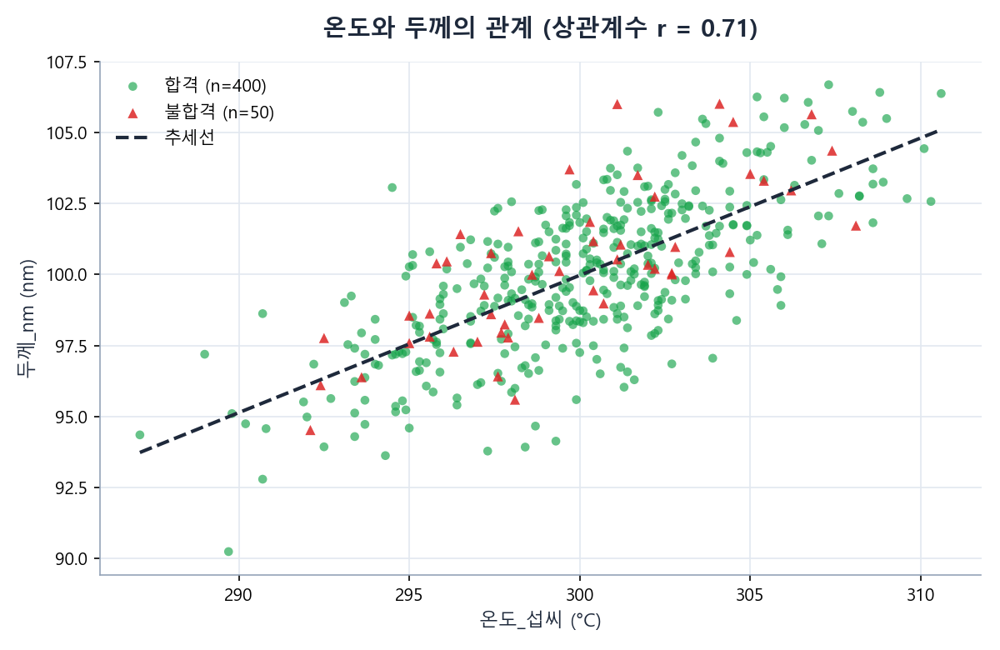

불량이 발생했을 때 "왜"인지 알아야 재발을 막을 수 있는데, 수많은 변수 중 무엇이 관련 있는지
눈으로 짐작하기는 어렵다. 상관관계 분석은 "함께 움직이는 변수 쌍"을 숫자로 찾아주는 도구로, 불량
원인을 좁혀가는 첫 단서로 쓰인다.
쉬운 예시
불합격이 유독 많았던 날의 온도 기록을 보니 정상 범위(295~305도)를 벗어난 값이 많았다면, "온도"가
불량과 관련 있는 원인 후보로 떠오른다. 다만 상관관계가 있다고 곧바로 "온도가 원인이다"라고 단정할
수는 없다 — 그래서 "원인"이 아니라 "원인 후보"라고 부른다.
⏮️ 지난 시간 복습
5차시 + 7차시 연결
5차시에서는 결측값·중복값과 함께 "말이 안 되는 이상값(예: 500℃ 이상)"을 찾아 정리해봤다.
7차시에서는 로트별 수율을 계산하고, 수율이 낮은 로트가 특정 설비에 몰리는지 살펴봤다.
이번 8차시는 두 내용을 합친다 — "이상값이 있었던 시점"과 "불합격이 발생한 시점"이
실제로 겹치는지를 데이터로 확인하고, 그 관계가 정말 원인이라고 말할 수 있는지까지 따져본다.
📚 이상치, 관리 상한/하한, 표준편차
이상치(Outlier)란?
대부분의 측정값 = 평소와 비슷한 범위 안에 모여 있음
이 범위를 크게 벗어난 값 → 이상치(Outlier) = 이상 데이터
이상치 ≠ 항상 "고장"
다만 불량·설비 이상과 함께 나타나는 경우가 많아 먼저 찾아볼 가치 있음
정상 범위를 정하는 두 가지 방법
정상 범위(관리 범위)를 정하는 방법 = 크게 두 가지
방법 1. 공정 규격(Spec) 기준
설비 설계자나 공정 엔지니어가 "이 값은 몇~몇 사이여야 정상"이라고 미리 정해둔 기준이다.
이번 데이터에서는 온도 295~305℃, 진공도 4.5~5.5 mTorr가 이 기준(교육용 예시)이다.
방법 2. 통계적 기준 — 평균 ± 표준편차
데이터 자체의 평균(mean)과 표준편차(std, 흩어진 정도)를 이용해
"평균에서 표준편차의 2배 이상 벗어난 값"을 이상치로 보는 방법이다. 이를 관리 상한(UCL,
Upper Control Limit) · 관리 하한(LCL, Lower Control Limit)이라고 부른다.
관리 상한 = 평균 + 2×표준편차, 관리 하한 = 평균 − 2×표준편차
먼저 아주 간단한 예로 감을 잡자
친구 6명의 팔굽혀펴기 횟수처럼 작은 숫자 예로 관리 상한/하한 계산부터 손에 익혀보자.
Python — 아주 간단한 이상치 찾기
pushups = pd.Series([20, 22, 19, 21, 20, 85]) # 친구 6명의 팔굽혀펴기 횟수
mean = pushups.mean()
std = pushups.std()
ucl = mean + 2 * std
lcl = mean - 2 * std
print(f"평균: {mean:.2f}, 표준편차: {std:.2f}")
print(f"관리 상한: {ucl:.2f}, 관리 하한: {lcl:.2f}")
print(pushups[(pushups > ucl) | (pushups < lcl)])
실행 결과
평균: 31.17, 표준편차: 26.39
관리 상한: 83.95, 관리 하한: -21.62
5 85
dtype: int64
결과 해석
한 명(85회)이 다른 다섯 명(19~22회)보다 압도적으로 많이 해서, 관리 상한(83.95회)을
넘는 이상치로 잡혔다. 다만 이 한 명 때문에 표준편차 자체도 26.39로 크게 부풀려졌다는
점도 함께 기억해두자 — 이상치 하나가 "이상치를 찾는 기준" 자체를 흔들 수 있다.
이제 같은 방식을 오늘 다룰 반도체 데이터의 온도 값에 적용해보자.
이번 데이터의 온도_섭씨 열 — 평균 300.10℃, 표준편차 3.97℃
통계적 기준 적용 → 관리 상한 308.05℃, 관리 하한 292.15℃ → 벗어난 행 450건 중 25건(5.6%)
규격 기준(295~305℃) 적용 → 92건(20.4%) 벗어남
기준을 어떻게 정하느냐에 따라 "이상치로 잡히는 개수"가 달라짐 — 중요한 포인트
📚 상관관계, 직관적으로 이해하기
상관관계(Correlation) = 두 변수가 "함께 움직이는 정도"
한쪽↑ 다른쪽↑ → 양의 상관
한쪽↑ 다른쪽↓ → 음의 상관
아무 관계 없음 → 상관관계 없음
상관관계의 세기 = 상관계수(r) — −1 ~ 1 사이 값
1에 가까움 → 강한 양의 상관
−1에 가까움 → 강한 음의 상관
0에 가까움 → 관계 없음
Pandas — df["A"].corr(df["B"])로 계산
상관계수 r
해석(교육용 기준)
0.7 이상
강한 양의 상관
0.3 ~ 0.7
약한~중간 양의 상관
-0.3 ~ 0.3
뚜렷한 관계 없음(대조군 포함)
-0.7 이하
강한 음의 상관
⚠️ 상관관계 ≠ 인과관계 — "원인 후보"라는 표현
가장 중요한 원칙상관관계가 있다고 해서 원인이라고 단정할 수 없다. 두 변수가 함께 움직인다는 것은
"관련이 있어 보인다"는 뜻일 뿐, "하나가 다른 하나를 일으켰다"는 증명이 아니다.
예 — 아이스크림 판매량과 익사 사고 건수 → 여름철 함께 증가 → 강한 상관관계
그러나 아이스크림이 익사 사고의 원인은 아님
"더운 날씨"라는 제3의 원인이 둘 다에 영향
공정 데이터도 마찬가지 — 두 열의 상관계수가 높게 나와도
진짜 원인-결과인지, 제3의 요인(시간·설비·계절 등)으로 우연히 함께 움직인 것인지 상관계수만으로는 알 수 없음
그래서 우리는 "원인 후보"라는 표현을 쓴다
이 과정에서는 상관관계가 확인된 변수를 "원인"이라고 부르지 않고 "원인 후보"라고
부른다. "원인 후보"는 "더 조사해볼 가치가 있는 유력한 용의자"라는 뜻이다. 진짜 원인인지
확인하려면 실험(예: 그 조건을 실제로 바꿔보고 결과가 달라지는지 확인)이 필요하며, 이는
데이터 분석만으로는 완전히 증명할 수 없다.
오늘 실습에서 살펴볼 네 가지 관계 — 온도-두께, 진공도-불합격, 냉각수온도-공정온도, 습도-불합격
일부는 "원인 후보"로 삼을 만함, 일부는 "관계없음(대조군)"으로 확인 — 두 결과 모두 정상적인 분석 결과
🗂️ 핵심 용어 카드
이상치
Outlier / Anomaly
한 줄 설명
정상 범위를 크게 벗어난 측정값.
쉬운 비유
반 평균 키가 165cm인데 혼자 210cm인 학생.
데이터에서의 예
온도_섭씨가 310.6℃처럼 정상 범위(295~305)를 벗어난 행.
자주 하는 오해
이상치 = 무조건 불량이라고 오해하기 쉽지만, 이상치이면서 합격인 경우도 있다.
관리 상한 / 하한
UCL / LCL
한 줄 설명
정상으로 보는 값의 위쪽/아래쪽 경계선.
쉬운 비유
체온계에서 "정상 체온" 범위의 위·아래 끝.
데이터에서의 예
진공도 4.5~5.5 mTorr, 온도 295~305℃.
자주 하는 오해
관리 한계는 절대적인 물리 법칙이 아니라, 사람이 정한 기준(교육용 예시)이다.
표준편차
Standard Deviation
한 줄 설명
데이터가 평균에서 평균적으로 얼마나 흩어져 있는지 나타내는 수.
쉬운 비유
과녁에 화살이 얼마나 넓게 퍼져 맞았는지의 정도.
데이터에서의 예
온도_섭씨의 표준편차 약 3.97℃.
자주 하는 오해
표준편차가 크다고 무조건 "나쁘다"는 뜻은 아니다. 변동이 크다는 사실만 알려준다.
상관관계
Correlation
한 줄 설명
두 변수가 함께 움직이는 정도(-1~1).
쉬운 비유
키와 몸무게처럼, 하나가 크면 다른 하나도 대체로 큰 관계.
데이터에서의 예
온도_섭씨와 두께_nm의 상관계수 r ≈ 0.71.
자주 하는 오해
상관계수가 높으면 곧 원인이라고 오해하기 쉽다. 아래 "인과관계" 카드 참고.
인과관계
Causation
한 줄 설명
한 변수의 변화가 실제로 다른 변수의 변화를 "일으키는" 관계.
쉬운 비유
불을 붙이면(원인) 물이 끓는다(결과) — 순서와 메커니즘이 분명하다.
데이터에서의 예
데이터의 상관계수만으로는 인과관계를 증명할 수 없다.
자주 하는 오해
"상관관계 = 인과관계"라고 착각하는 것이 데이터 분석에서 가장 흔한 오류다.
원인 후보
Root-cause Candidate
한 줄 설명
상관관계가 확인되어 더 조사해볼 가치가 있는 변수.
쉬운 비유
범죄 수사에서 아직 확정되지 않은 "용의자".
데이터에서의 예
진공도 이탈은 불합격의 원인 후보로 삼을 만하다(실험으로 추가 검증 필요).
자주 하는 오해
원인 후보를 곧바로 "원인"이라고 보고서에 단정적으로 적는 경우가 많다.
대조군
Control Variable
한 줄 설명
비교를 위해 일부러 포함한, 결과와 무관하다고 예상되는 변수.
쉬운 비유
신약 효과를 검증할 때 가짜 약(위약)을 먹는 대조군.
데이터에서의 예
습도_pct는 불합격과 상관관계가 거의 없도록(대조군으로) 설계되었다.
자주 하는 오해
"상관관계 없음"이라는 결과가 나오면 분석이 실패했다고 오해하기 쉽다. 이것도 유효한 결론이다.
📁 데이터 미리보기
오늘 사용할 데이터: data/weekly/week08/week08_anomaly_root_cause.csv (450행 12열)
Pandas 코드를 쓰기 전에, 같은 CSV(week08_anomaly_root_cause.csv)를
Orange3로 불러와 Correlations 위젯으로 모든 숫자 변수 쌍의 상관관계를 먼저 자동 정렬해 확인한다.
어떤 변수 쌍이 관계 있어 보이고, 어떤 변수는 관계가 없어 보이는지 미리 짐작해본다.
결과 해석
진공도가 정상 범위를 벗어나면 불합격률이 8.06%에서 25.64%로 약 3배 이상 뛴다.
이 정도로 뚜렷한 차이는 우연이라고 보기 어렵다. 진공도 이탈은 불합격의
원인 후보로 삼을 만하다 — 다만 "원인으로 확정"하려면 실제로 진공도를 조절하며
결과가 달라지는지 확인하는 실험이 추가로 필요하다.
💻 실습 코드 ③ — 온도와 두께의 산점도, 상관계수
먼저 아주 간단한 예로 감을 잡자
6차시에서 그려본 "공부 시간과 시험 점수" 예로, .corr()가 상관계수를 어떻게
계산해주는지 먼저 확인해보자.
결과 해석
r = 0.89는 1에 매우 가까운 강한 양의 상관이다 — 6차시에서 산점도로 봤던 "오른쪽 위로
향하는 점들"이 숫자로도 확인된다. 이제 같은 .corr()를 반도체 데이터의
온도-두께 관계에 적용해보자.
온도_섭씨 · 두께_nm 두 숫자 열의 관계 — 산점도로 그리고 상관계수로 세기 확인
Python
import matplotlib.pyplot as plt
r = df["온도_섭씨"].corr(df["두께_nm"])
print("상관계수 r =", round(r, 2))
plt.scatter(df["온도_섭씨"], df["두께_nm"], alpha=0.6)
plt.xlabel("온도_섭씨")
plt.ylabel("두께_nm")
plt.title(f"온도와 두께의 관계 (r = {r:.2f})")
plt.show()
실행 결과
상관계수 r = 0.71

결과 해석
r = 0.71은 "강한 양의 상관"에 해당한다. 온도가 높을수록 두께도 함께 커지는
경향이 뚜렷하다 — 온도는 두께의 원인 후보로 볼 수 있다(실제로 증착 공정에서 챔버 온도가
높으면 증착 속도가 빨라져 막이 더 두껍게 쌓이는 경우가 흔하다).
주의 — 그렇다고 온도가 "불합격의" 원인 후보는 아니다
온도는 두께와는 강한 상관관계를 보이지만, 온도 정상 범위(295~305℃)를 벗어난 행만
따로 모아 불합격률을 계산해보면 오히려 9.78%로, 정상 범위 안(11.45%)보다 낮게 나온다.
즉 "A와 B가 상관관계가 있다"와 "A와 C가 상관관계가 있다"는 별개의 이야기이며,
한 관계에서 원인 후보였다고 해서 다른 결과에서도 원인 후보인 것은 아니다.
결과 해석
EQ-02의 평균 진동은 0.678mm/s로 다른 설비(약 0.50mm/s)보다 뚜렷하게 높다. EQ-02는
진동 관점에서 "확인이 필요한 설비"이자 원인 후보로 볼 수 있다(6차시에서 EQ-02가
온도 변동이 큰 설비로 소개된 것과도 이어진다).
냉각수온도가 오르면 공정 온도가 뒤따라 오를까? — 이상 전후 비교
데이터 전체 기준 냉각수온도-공정온도 상관계수 r ≈ 0.06 — 거의 0에 가까움
다만 전체 평균만 보면 특정 구간에서 벌어지는 일을 놓칠 수 있음
냉각수온도가 오르기 시작한 구간 하나를 골라 "오르기 전 10건" vs "오르는 동안 10건" 직접 비교
잠깐 — iloc란?df.iloc[시작:끝]은 조건이 아니라 "몇 번째 행부터 몇 번째 행까지"를
순서(위치)로 골라내는 방법이다. 2차시에서 배운 리스트 슬라이싱과 규칙이 똑같다 —
시작 번호는 포함, 끝 번호는 포함되지 않는다. 이 방법이 뜻대로 동작하려면 데이터가 원하는
기준(여기서는 측정시간)으로 이미 정렬되어 있어야 한다.
Python
# 데이터가 이미 측정시간 순으로 저장되어 있으므로, 행 번호로 구간을 나눌 수 있다.
before = df.iloc[321:331] # 냉각수온도가 오르기 전 10건
during = df.iloc[331:341] # 냉각수온도가 오르는 구간 10건
print("이전 냉각수온도 평균:", round(before["냉각수온도_섭씨"].mean(), 2))
print("이후 냉각수온도 평균:", round(during["냉각수온도_섭씨"].mean(), 2))
print("이전 공정온도 평균:", round(before["온도_섭씨"].mean(), 2))
print("이후 공정온도 평균:", round(during["온도_섭씨"].mean(), 2))
실행 결과
이전 냉각수온도 평균: 19.73
이후 냉각수온도 평균: 22.47
이전 공정온도 평균: 300.68
이후 공정온도 평균: 301.31
결과 해석
냉각수온도가 평균 2.74℃ 오르는 구간 동안, 공정온도도 평균 0.63℃ 함께 올랐다.
전체 데이터의 상관계수(0.06)만 봤다면 놓쳤을 패턴이다. 이 데이터에는 이런 구간이
3곳 있도록 설계되었다.
그래도 인과관계로 단정할 수 없다
"냉각수온도가 먼저 오르고 공정온도가 나중에 올랐다"는 시간 순서가 있다고 해서 곧
인과관계가 증명되는 것은 아니다. 예를 들어 클린룸 전체의 냉방 시스템 부하가
냉각수온도와 공정온도 모두에 영향을 주는 "제3의 원인"일 수도 있다. 냉각수온도는
공정온도의 원인 후보로 삼아 추가 점검할 가치가 있는 수준이다.